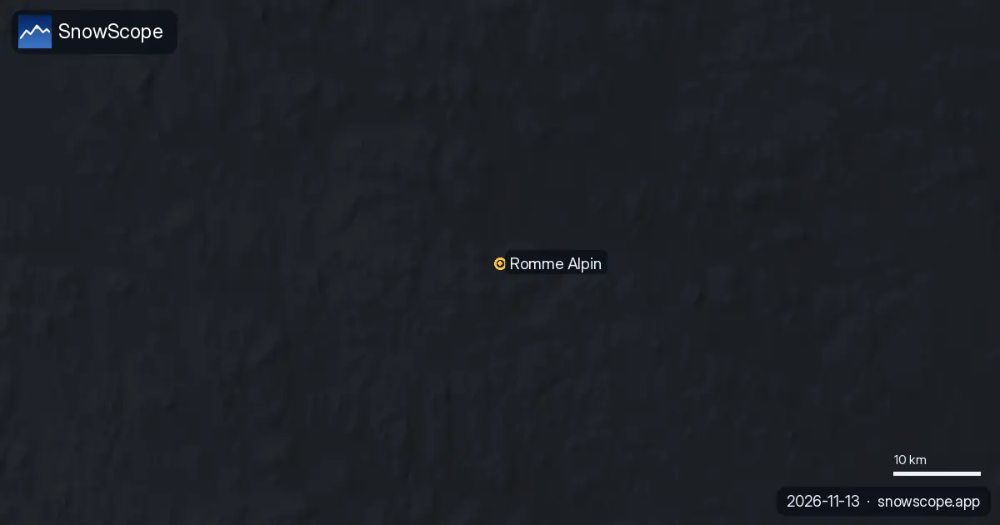

Fresh snow in Scandinavia: 60 cm at Breimsbygda Skisenter in 72 hours (16 November)
In the last 72 hours, Breimsbygda Skisenter got the most new snow: about 60 cm. Jølster Skisenter (60 cm), Myrkdalen (57 cm) and Harpefossen skisenter (56 cm) also had new snow.
See the live snow forecast for Breimsbygda Skisenter in the SnowScope appSnow depth, powder alerts and the 3D map, free.
Where the snow is deepest
If you want depth, Breimsbygda Skisenter (Norway) is the place this Monday: around 50 cm up top. The runners-up are Myrkdalen (49 cm) and Harpefossen skisenter (46 cm).
Fresh snow changes fast: wind packs it on open slopes and mild air makes it heavy, so the best of it is usually in the first morning after the snowfall, in the trees and on the sheltered side of the fjell.
| Resort | Snow depth | New snow, 72 h | Coming, next days | Top |
|---|---|---|---|---|
| Breimsbygda Skisenter | 50 cm | 60 cm | 1 cm | 845 m |
| Jølster Skisenter | 45 cm | 60 cm | 0 cm | 759 m |
| Myrkdalen | 49 cm | 57 cm | 0 cm | 1,067 m |
| Harpefossen skisenter | 46 cm | 56 cm | 2 cm | 812 m |
| Voss Resort Fjellheisar | 46 cm | 56 cm | 0 cm | 948 m |
Snow forecast
The next snow goes to Harpefossen skisenter first: about 2 cm by 19 November.
The leading resorts in detail
Breimsbygda Skisenter (Norway): 1 cm still to come by 19 November; a top station at 845 m; a snow depth of about 50 cm near the top; a recent 60 cm on top. Myrkdalen, Norway: 57 cm added over three days; lifts up to 1,067 m; a snow depth of about 49 cm near the top. Harpefossen skisenter, Norway: a forecast of 2 cm by 19 November; skiing up to 812 m; roughly 46 cm where the best runs start; 56 cm of new snow in three days.
Low, middle and high
Height matters at Breimsbygda Skisenter: 36 cm at the top (845 m), 34 cm at 740 m and 28 cm down at 635 m.
Measured on the ground
Hjartasen (251 m) measured 20 cm of snow on 16 November, 8 cm of it new in 24 hours. Storlien-Storvallen (583 m) measured 16 cm of snow on 16 November, 8 cm of it new in 24 hours. Tagdalen (415 m) measured 25 cm of snow on 16 November, 7 cm of it new in 24 hours.
Across Scandinavia
Snow now covers about 729,380 km² of Scandinavia; 332 of the 423 resorts we follow are white.
Tips for skiers
- Snow numbers here are estimates for an area; check the resort's own report for open lifts.
- Cold, dry snow is slow: a cold-temperature wax makes a real difference.
- Many northern resorts light their main slopes in the afternoon: check the lit-slope hours before you go.
- Above the tree line the wind decides: on windy days, the forest runs keep the best snow and the best view.
About these numbers
Resort snow depths are the deepest snow on the resort's upper slopes from the SnowScope snow model (about 1 km, run of 16 November); they are estimates for an area, not a measurement at one point. Station values are measurements on the date shown. Forecasts can change. Always read the official avalanche bulletin before going off-piste.
Cite this report
For research, teaching or the press: the numbers and charts are free to reuse under CC BY 4.0 with this citation.
SnowScope (2026), Fresh snow in Scandinavia: 60 cm at Breimsbygda Skisenter in 72 hours (16 November), https://snowscope.app/blog/en/2026/11/scandinavia-breimsbygda-skisenter-fresh-snow-powder-alert-16-november-2026.html, accessed 2026-11-16
SnowScope (Atlas Labs). (2026, November 16). Fresh snow in Scandinavia: 60 cm at Breimsbygda Skisenter in 72 hours (16 November). SnowScope snow reports. https://snowscope.app/blog/en/2026/11/scandinavia-breimsbygda-skisenter-fresh-snow-powder-alert-16-november-2026.html
BibTeX
@misc{snowscope2026scandinaviabreimsbygdask,
author = {{SnowScope (Atlas Labs)}},
title = {Fresh snow in Scandinavia: 60 cm at Breimsbygda Skisenter in 72 hours (16 November)},
year = {2026},
month = nov,
howpublished = {\url{https://snowscope.app/blog/en/2026/11/scandinavia-breimsbygda-skisenter-fresh-snow-powder-alert-16-november-2026.html}},
note = {Published 2026-11-16 20:42 UTC; accessed 2026-11-16}
}· CC BY 4.0 · Methods, data and tools →
Breimsbygda Skisenter: snow and temperature by height, this winter vs last (tools) →
Follow Breimsbygda Skisenter
Free: a message when fresh snow is coming, and the forecast every morning.
More snow reports

Røros dog sledding guide for winter 2026-27: about 5 to 6 cm of snow on Norway's national snow map, kennels listed by Destination Røros with prices, the Femundløpet sled-dog race in February 2027, and the rules for your own dog near tame reindeer.

Romme Alpin snow in mid-November 2026: Borlänge measured 4 cm, Ludvika 10 cm and Falun 0 cm on 13 November; rain this week; the season starts 19 December on made snow. What 46 past winters say about natural snow here.

Pyhä-Luosto snow depth in mid-November 2026: weather stations around the fells measured 0 to 9 cm on 13 November, below normal; about 23 cm is forecast this week with no rain. Opening plans and 46 past winters.